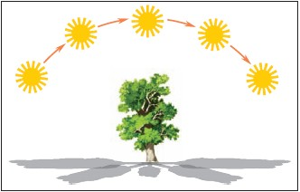
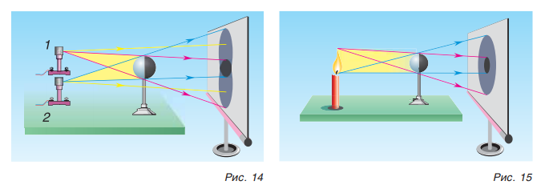
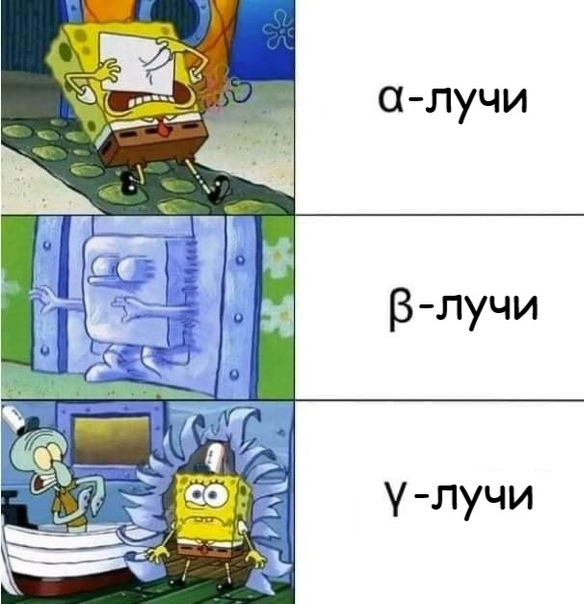

Конвертер скорости
Метров в секунду
Км. в час
Конвертер температуры
Форенгейт
Цельсий'
Конвертер длинны
Метры
Сантиметр
Километр
Мили
Конвертер массы
Килограмм
Грамм
Тонн
Пуды
Конвертер площади
Кв. метр
Кв. км
Гектар
Конвертер объема
Кубический метр
Баррель (нефть)
Литр
Стакан
Конвертер давления
Бар
Мм. ртутного столба
Задачи
Скорость:
км/ч
Время:
ч
Расстояние:
км
